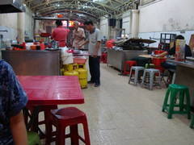
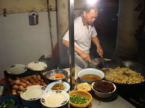

|
本格的な観光は今日一日なので気合が入る。W夫妻とその友人の4人で、Malacca を訪れる。
侵略を繰り返されたマレーシアの歴史を感じる世界遺産の街で、
アジア・ヨーロッパ各国の特徴ある史跡や宗教がごちゃまぜになって残っている。
お互い共存しているのはこの国の面白いところだ。世界中の神々が住んでいるような寺院だらけの通りがあった。
Wたちが歩きながら歴史も説明してくれた。
「そして、最後に攻めこんできたのが your country だ」と
中国の旧正月前なので、町中が提灯でデコレーションされている。
オランダ人は引き上げたが、ポルトガル人の居住区は今でも残っているそうだ。
そのエリアはクリスマス時期にデコレーションをし、マレーシアでは珍しいため観光に人が集まるそうだ。
庭の中まで侵入したりするので問題がおきたりするらしい。
異文化の対立でなく、なんとものどかな問題があるものだ。
今日のディナーは、雑然とした屋台の集まる工場のようなスペースに、
給食のような原色プラスチックの食器が並ぶ。
滞在数日で慣れてきたが、これが一般的な料理屋であり、食事はうまい。
今日案内してもらったのは特に有名な場所だそうで、堪能させてもらった。
| この屋台のエリアは名物 | 帰国後トライするために撮影 |
|  |
 |
W たちに一日中遊んでもらい、帰りの車の中では疲れて熟睡する始末。
次回彼が日本に来たら是非案内させてほしい。
|